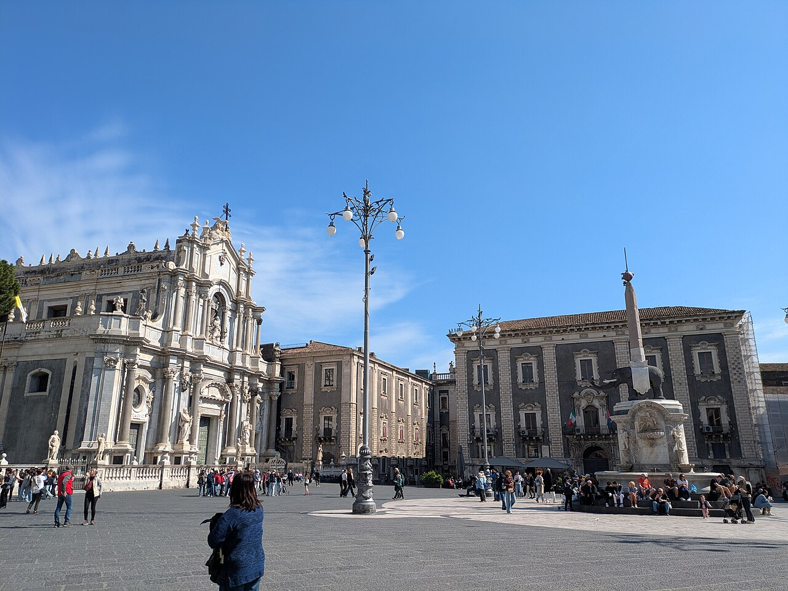

info e posizione
Piazza del Duomo di Catania è la principale piazza della città. In essa confluiscono tre strade, ovvero la via Etnea, la storica asse cittadina, la via Giuseppe Garibaldi e la via Vittorio Emanuele II che la attraversa da est ad ovest. Sul lato orientale della piazza sorge il Duomo, dedicato alla patrona della città festeggiata il 5 febbraio.
Storia e descrizione

Sul lato nord si trova il palazzo degli Elefanti, ovvero, il Municipio. Dall'altro lato della piazza sono collocate la fontana dell'Amenano, molto famosa per gli abitanti, dentro la quale vengono gettate delle monetine e, accanto, il palazzo dei Chierici che è collegato al Duomo da un passaggio che corre sulla porta Uzeda.
Al centro della piazza si trova quello che è il simbolo di Catania, ovvero "u Liotru", una statua in pietra lavica raffigurante un elefante, sormontata da un obelisco, posta al centro di una fontana in marmo più volte rimaneggiata.